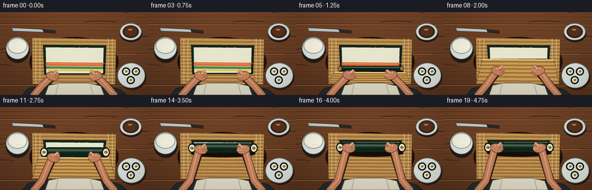
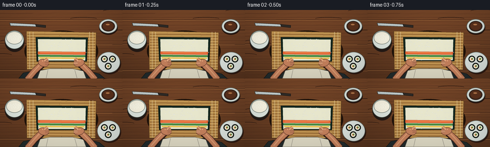
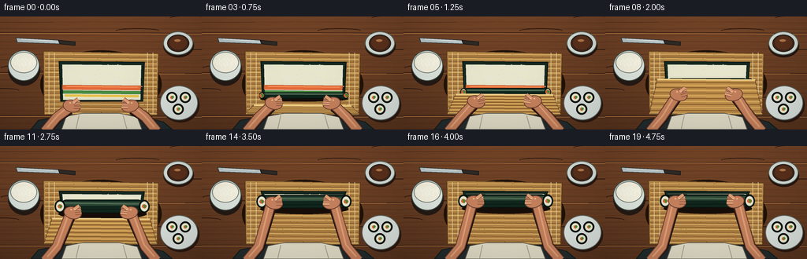
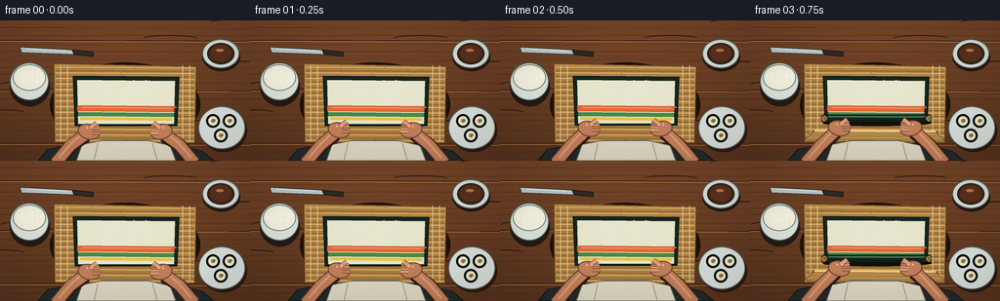

CODING AGENTS AS PIXEL WORLD MODELS
traex/GPT-5.6-Sol · motion_rationality_0023
点击播放 · 原生 RGB 像素
逐轮保存的候选
回放视频、检查图与代码变化。
每份候选均可单独播放。实际图片检查记录在下方工具轨迹中。
候选 01播放与检查图
点击播放 · 原生 RGB 像素


展开代码变化
--- 上一保存版本
+++ 本次保存版本
@@ -0,0 +1,251 @@
+from pathlib import Path
+import math
+import numpy as np
+from PIL import Image, ImageDraw, ImageFilter
+import artifact_io
+
+W,H,S = 256,144,4
+RW,RH = W*S,H*S
+rng = np.random.default_rng(23)
+
+def sc(v): return int(round(v*S))
+def pts(seq): return [(sc(x),sc(y)) for x,y in seq]
+
+def ellipse(d, box, fill, outline=None, width=1):
+ d.ellipse(tuple(sc(v) for v in box), fill=fill, outline=outline, width=sc(width) if outline else 1)
+def polygon(d, xy, fill, outline=None, width=1):
+ d.polygon(pts(xy), fill=fill)
+ if outline: d.line(pts(xy+[xy[0]]), fill=outline, width=sc(width), joint='curve')
+def line(d, xy, fill, width=1, joint='curve'):
+ d.line(pts(xy), fill=fill, width=sc(width), joint=joint)
+
+def smooth(x):
+ x=max(0,min(1,x)); return x*x*(3-2*x)
+
+def rotated_ellipse(im, center, size, angle, fill, outline=None, ow=1):
+ w,h=size
+ pad=5
+ lay=Image.new('RGBA',(sc(w+pad*2),sc(h+pad*2)),(0,0,0,0))
+ ld=ImageDraw.Draw(lay)
+ ld.ellipse((sc(pad),sc(pad),sc(pad+w),sc(pad+h)),fill=fill,outline=outline,width=sc(ow))
+ lay=lay.rotate(angle,Image.Resampling.BICUBIC,expand=True)
+ im.alpha_composite(lay,(sc(center[0])-lay.width//2,sc(center[1])-lay.height//2))
+
+# fixed natural textures
+wood_knots=[(rng.uniform(0,W),rng.uniform(0,H),rng.uniform(10,28),rng.uniform(.25,.7)) for _ in range(15)]
+rice_grains=[]
+for _ in range(145):
+ x=rng.uniform(79,180); y=rng.uniform(61,105)
+ ang=rng.uniform(-35,35); rice_grains.append((x,y,ang,rng.uniform(2.1,3.3),rng.uniform(.75,1.15)))
+mat_flecks=[(rng.uniform(57,199),rng.uniform(47,125),rng.uniform(.2,.8)) for _ in range(95)]
+
+
+def base_scene():
+ # warm wood, subtle directional lighting
+ yy,xx=np.mgrid[0:RH,0:RW]
+ x=xx/S; y=yy/S
+ base=np.zeros((RH,RW,3),dtype=np.float32)
+ light=1.05 - .0018*y + .045*np.exp(-((x-122)**2+(y-57)**2)/9000)
+ grain=2.2*np.sin(y*1.15)+1.2*np.sin(y*.27+1.1)+.8*np.sin(x*.12+y*.75)
+ base[:,:,0]=(111+grain)*light
+ base[:,:,1]=(66+grain*.52)*light
+ base[:,:,2]=(38+grain*.25)*light
+ # static fine noise to avoid plastic flatness
+ noise=np.random.default_rng(7).normal(0,1.15,(RH,RW,1))
+ base += noise
+ im=Image.fromarray(np.clip(base,0,255).astype(np.uint8),'RGB').convert('RGBA')
+ d=ImageDraw.Draw(im,'RGBA')
+ # plank seams / long wood grain
+ for y0 in (20,71,126):
+ line(d,[(0,y0),(256,y0+1.2)],(47,25,17,100),1)
+ line(d,[(0,y0+1.1),(256,y0+2)],(186,123,69,35),1)
+ for k in range(18):
+ y0=7+k*8+rng_fixed(k)*2
+ line(d,[(0,y0),(68,y0+.8*math.sin(k)),(148,y0-.4),(256,y0+1)],(70,37,23,28),.55)
+ for cx,cy,rx,a in wood_knots:
+ d.arc((sc(cx-rx),sc(cy-3),sc(cx+rx),sc(cy+3)),180,355,fill=(45,25,17,int(a*35)),width=sc(1))
+ return im
+
+def rng_fixed(k): return ((k*37)%17)/17
+
+def draw_props(im):
+ d=ImageDraw.Draw(im,'RGBA')
+ # rice bowl, left rear
+ ellipse(d,(10,47,51,88),(36,26,21,75))
+ ellipse(d,(10,43,50,82),(221,229,222,255),(69,83,77,255),1)
+ ellipse(d,(13,45,47,72),(247,243,225,255),(120,130,121,180),1)
+ for i in range(28):
+ a=i*2.399; r=math.sqrt((i+.5)/28)*14
+ x=30+math.cos(a)*r; y=58+math.sin(a)*r*.42
+ rotated_ellipse(im,(x,y),(3.3,1.35),i*31%180,(251,250,232,235))
+ d=ImageDraw.Draw(im,'RGBA')
+ # small soy saucer on upper right
+ ellipse(d,(207,22,246,52),(39,22,16,75))
+ ellipse(d,(207,19,245,49),(216,224,218,255),(85,99,95,255),1)
+ ellipse(d,(212,23,240,45),(64,38,26,255),(42,35,31,255),1)
+ ellipse(d,(215,25,237,42),(91,49,28,180))
+ ellipse(d,(221,29,229,32),(181,121,75,75))
+ # knife upper left, diagonal
+ polygon(d,[(20,27),(76,30),(77,35),(22,33)],(188,200,201,255),(54,58,57,255),1)
+ polygon(d,[(74,30),(95,32),(95,37),(76,35)],(47,43,39,255),(27,23,21,255),1)
+ line(d,[(27,29),(68,31)],(248,250,244,120),.7)
+ # finished sample maki plate on right bottom -- reinforces sushi context
+ ellipse(d,(205,91,253,135),(45,25,17,70))
+ ellipse(d,(203,88,251,132),(218,225,220,255),(93,104,98,255),1)
+ for cx,cy in [(218,103),(235,103),(226,118)]:
+ ellipse(d,(cx-7,cy-7,cx+7,cy+7),(20,29,25,255),(8,12,10,255),1)
+ ellipse(d,(cx-4.8,cy-4.8,cx+4.8,cy+4.8),(238,236,207,255))
+ ellipse(d,(cx-2,cy-2,cx+2,cy+2),(218,100,54,255))
+ ellipse(d,(cx-.4,cy-2,cx+2.6,cy+1),(75,139,66,255))
+
+def draw_mat(im):
+ d=ImageDraw.Draw(im,'RGBA')
+ # soft mat shadow and base
+ ellipse(d,(51,43,205,130),(30,18,10,76))
+ polygon(d,[(55,44),(201,47),(199,126),(56,125)],(183,137,73,255),(92,62,31,255),1)
+ # slats horizontal, bound by subtle vertical strings
+ for j,y in enumerate(np.linspace(48,123,27)):
+ col=(226,181+int(7*math.sin(j)),105,235) if j%2==0 else (152,105,52,220)
+ line(d,[(57,y),(199,y+1.1)],col,1.2)
+ line(d,[(58,y+.8),(198,y+1.8)],(91,60,30,90),.38)
+ for x in (62,69,187,194):
+ line(d,[(x,46),(x,124)],(232,211,160,170),.8)
+ for x,y,a in mat_flecks:
+ ellipse(d,(x,y,x+a,y+.35),(95,61,29,70))
+
+def draw_flat_sushi(im, fold_y, q):
+ d=ImageDraw.Draw(im,'RGBA')
+ top=57; bottom=max(top+1,min(108,fold_y))
+ if bottom <= top+1: return
+ # dark nori border, irregular sheen
+ polygon(d,[(75,57),(183,58),(181,bottom),(77,bottom)],(21,40,32,255),(8,21,17,255),1)
+ if bottom>61:
+ polygon(d,[(79,61),(179,62),(178,bottom-2),(80,bottom-2)],(232,231,205,255))
+ # rice grains clipped to current visible area
+ for x,y,ang,wid,hei in rice_grains:
+ if 61.2 < y < bottom-2.0:
+ shade=int(235 + 12*((int(x*3+y*5)%7)/6))
+ rotated_ellipse(im,(x,y),(wid,hei),ang,(shade,shade,min(250,shade+3),220),(185,188,169,90),.3)
+ d=ImageDraw.Draw(im,'RGBA')
+ # filling near lower third; visible only until it has been gathered into roll
+ if bottom>88:
+ polygon(d,[(79,87),(179,88),(178,94),(79,93)],(230,106,56,255),(132,55,30,180),.6)
+ polygon(d,[(80,94),(178,95),(178,99),(80,98)],(74,142,67,255),(39,86,42,180),.6)
+ polygon(d,[(82,99),(176,100),(176,103),(82,102)],(234,196,77,255))
+ line(d,[(84,89),(175,90)],(255,166,107,180),1)
+
+def draw_roll(im, cy, q):
+ if q < .035: return
+ d=ImageDraw.Draw(im,'RGBA')
+ height=8+9*smooth(min(1,q*1.7))
+ x1,x2=76,183
+ # contact shadow
+ ellipse(d,(x1-2,cy+height*.18,x2+3,cy+height*.95),(24,14,9,int(45+55*q)))
+ # cylindrical nori body with layered highlights
+ d.rounded_rectangle((sc(x1),sc(cy-height/2),sc(x2),sc(cy+height/2)),radius=sc(height/2),fill=(17,39,30,255),outline=(7,21,15,255),width=sc(1))
+ d.rounded_rectangle((sc(x1+3),sc(cy-height*.35),sc(x2-3),sc(cy-1)),radius=sc(3),fill=(48,75,57,125))
+ line(d,[(x1+5,cy-height*.25),(x2-5,cy-height*.18)],(105,132,103,80),1)
+ line(d,[(x1+7,cy+height*.25),(x2-6,cy+height*.22)],(3,16,11,150),.8)
+ # open ends expose rice and colorful core
+ for cx,flip in ((x1,1),(x2,-1)):
+ ellipse(d,(cx-height*.39,cy-height*.48,cx+height*.39,cy+height*.48),(12,27,20,255),(5,13,9,255),.8)
+ ellipse(d,(cx-height*.30,cy-height*.37,cx+height*.30,cy+height*.37),(232,231,207,255),(163,168,149,255),.45)
+ ellipse(d,(cx-2.9,cy-2.5,cx+2.9,cy+2.5),(223,98,50,255))
+ polygon(d,[(cx-1.4,cy-2.7),(cx+2.8,cy-.8),(cx+.8,cy+3)],(66,137,61,255))
+
+def draw_flap(im, cy, q):
+ # Lifted bamboo edge passing over the roll; strongest in middle of action.
+ if q<=.03 or q>=.92: return
+ lift=math.sin(math.pi*min(1,q/.92))**.72
+ tip_y=121*(1-lift)+(cy-6)*lift
+ d=ImageDraw.Draw(im,'RGBA')
+ # cast shadow beneath lifted mat
+ polygon(d,[(57,124),(199,125),(190,tip_y+5),(67,tip_y+4)],(22,13,8,int(38+45*lift)))
+ polygon(d,[(56,123),(199,124),(190,tip_y),(66,tip_y-1)],(190,142,74,255),(91,59,28,255),.8)
+ # perspective slats, compressed toward lifted lip
+ for j in range(13):
+ f=j/12
+ # concentrated at lip via slight curve
+ y=123*(1-f)+tip_y*f - 1.3*math.sin(f*math.pi)*lift
+ xl=56*(1-f)+66*f; xr=199*(1-f)+190*f
+ col=(228,182,101,235) if j%2==0 else (128,87,41,210)
+ line(d,[(xl,y),(xr,y+1)],col,1.2)
+ line(d,[(66,tip_y-1),(190,tip_y)],(239,207,137,255),2)
+
+def draw_person(im, hand_y, q, t):
+ # Person is framed from chest downward edge, with both forearms and articulated fingers.
+ d=ImageDraw.Draw(im,'RGBA')
+ # torso and apron at near edge
+ polygon(d,[(39,144),(49,132),(80,126),(176,126),(207,134),(219,144)],(34,43,44,255),(18,24,25,255),1)
+ polygon(d,[(78,144),(84,127),(105,123),(151,123),(174,128),(180,144)],(221,216,195,255),(85,83,75,255),1)
+ line(d,[(100,126),(96,144)],(161,156,142,170),1)
+ line(d,[(156,126),(161,144)],(161,156,142,170),1)
+ # arm endpoints track roll; subtle bilateral compression during press
+ lx=91+2*math.sin(math.pi*q); rx=165-2*math.sin(math.pi*q)
+ hy=hand_y
+ skin=(196,128,92,255); skin_hi=(222,158,117,255); edge=(104,62,47,255)
+ # forearm shadows
+ line(d,[(58,145),(73,128),(lx-3,hy+4)],(36,20,14,80),14)
+ line(d,[(198,145),(184,128),(rx+3,hy+4)],(36,20,14,80),14)
+ # forearms
+ line(d,[(57,146),(72,128),(lx-4,hy+3)],edge,13)
+ line(d,[(57,146),(72,128),(lx-4,hy+3)],skin,11)
+ line(d,[(199,146),(184,128),(rx+4,hy+3)],edge,13)
+ line(d,[(199,146),(184,128),(rx+4,hy+3)],skin,11)
+ line(d,[(60,141),(73,126),(lx-5,hy+1)],skin_hi,2)
+ line(d,[(196,141),(183,126),(rx+5,hy+1)],skin_hi,2)
+ # palms
+ rotated_ellipse(im,(lx,hy),(23,16),-13,skin,edge,1)
+ rotated_ellipse(im,(rx,hy),(23,16),13,skin,edge,1)
+ d=ImageDraw.Draw(im,'RGBA')
+ # fingers point slightly toward center and curl over mat/roll
+ curl=2.0+2.5*math.sin(math.pi*min(1,q/.9))
+ for i in range(4):
+ oy=(i-1.5)*2.25
+ # left fingers
+ line(d,[(lx+3,hy+oy-2),(lx+10+i*.35,hy+oy-curl)],edge,3.7)
+ line(d,[(lx+3,hy+oy-2),(lx+10+i*.35,hy+oy-curl)],skin_hi if i<2 else skin,2.8)
+ # right fingers
+ line(d,[(rx-3,hy+oy-2),(rx-10-i*.35,hy+oy-curl)],edge,3.7)
+ line(d,[(rx-3,hy+oy-2),(rx-10-i*.35,hy+oy-curl)],skin_hi if i>1 else skin,2.8)
+ # thumbs splay forward, visibly gripping
+ line(d,[(lx+1,hy-4),(lx+8,hy-9)],edge,5)
+ line(d,[(lx+1,hy-4),(lx+8,hy-9)],skin_hi,3.7)
+ line(d,[(rx-1,hy-4),(rx-8,hy-9)],edge,5)
+ line(d,[(rx-1,hy-4),(rx-8,hy-9)],skin_hi,3.7)
+ # knuckle highlights
+ for x in (lx-2,lx+3,rx-3,rx+2): ellipse(d,(x-1,hy-5,x+1,hy-3),(240,180,138,125))
+
+
+def render_frame(i):
+ t=i/19
+ # short anticipatory grip, then one continuous forward roll and finishing press
+ q=smooth((t-.10)/.72)
+ roll_y=102-32*q
+ # active front edge/fold advances upward; at start sheet fully open
+ fold_y=108-45*q
+ hand_y=111*(1-q)+(roll_y+1)*q
+ if t>.84:
+ # two subtle downward finishing presses without reversing the roll
+ hand_y += 1.3*math.sin((t-.84)/.16*math.pi)
+ im=base_scene()
+ draw_props(im)
+ draw_mat(im)
+ draw_flat_sushi(im,fold_y,q)
+ draw_roll(im,roll_y,q)
+ draw_flap(im,roll_y,q)
+ draw_person(im,hand_y,q,t)
+ # gentle warm vignette and final antialias
+ rgb=im.convert('RGB').resize((W,H),Image.Resampling.LANCZOS)
+ arr=np.asarray(rgb).astype(np.float32)
+ yy,xx=np.mgrid[0:H,0:W]
+ vign=1-.08*((xx-W/2)/(W/2))**2-.07*((yy-H/2)/(H/2))**2
+ arr*=vign[:,:,None]
+ return np.clip(arr,0,255).astype(np.uint8)
+
+def main():
+ frames=np.stack([render_frame(i) for i in range(20)])
+ artifact_io.save(frames,Path(__file__).resolve().parent)
+
+if __name__=='__main__':
+ main()
候选 02播放与检查图
点击播放 · 原生 RGB 像素


展开代码变化
--- 上一保存版本
+++ 本次保存版本
@@ -220,11 +220,12 @@
def render_frame(i):
t=i/19
# short anticipatory grip, then one continuous forward roll and finishing press
- q=smooth((t-.10)/.72)
+ q=smooth((t-.06)/.74)
roll_y=102-32*q
# active front edge/fold advances upward; at start sheet fully open
fold_y=108-45*q
- hand_y=111*(1-q)+(roll_y+1)*q
+ approach=3*smooth(t/.10)
+ hand_y=(114-approach)*(1-q)+(roll_y+1)*q
if t>.84:
# two subtle downward finishing presses without reversing the roll
hand_y += 1.3*math.sin((t-.84)/.16*math.pi)
可观测工具轨迹
实际执行的命令与返回图片。
命令 1exit 0
/bin/bash -lc "cat prompt.txt && printf '\\n--- RULES ---\\n' && cat GENERATION_RULES.md && printf '\\n--- SPEC ---\\n' && cat task_spec.json"
命令 2exit 0
/bin/bash -lc "find . -maxdepth 2 -type f -printf '%p\\n' | sort"
命令 3exit 0
/bin/bash -lc 'cat artifact_io.py'
命令 4exit 0
/bin/bash -lc "cat > generate.py <<'PY'
from pathlib import Path
import math
import numpy as np
from PIL import Image, ImageDraw, ImageFilter
import artifact_io
W,H,S = 256,144,4
RW,RH = W*S,H*S
rng = np.random.default_rng(23)
def sc(v): return int(round(v*S))
def pts(seq): return [(sc(x),sc(y)) for x,y in seq]
def ellipse(d, box, fill, outline=None, width=1):
d.ellipse(tuple(sc(v) for v in box), fill=fill, outline=outline, width=sc(width) if outline else 1)
def polygon(d, xy, fill, outline=None, width=1):
d.polygon(pts(xy), fill=fill)
if outline: d.line(pts(xy+[xy[0]]), fill=outline, width=sc(width), joint='curve')
def line(d, xy, fill, width=1, joint='curve'):
d.line(pts(xy), fill=fill, width=sc(width), joint=joint)
def smooth(x):
x=max(0,min(1,x)); return x*x*(3-2*x)
def rotated_ellipse(im, center, size, angle, fill, outline=None, ow=1):
w,h=size
pad=5
lay=Image.new('RGBA',(sc(w+pad*2),sc(h+pad*2)),(0,0,0,0))
ld=ImageDraw.Draw(lay)
ld.ellipse((sc(pad),sc(pad),sc(pad+w),sc(pad+h)),fill=fill,outline=outline,width=sc(ow))
lay=lay.rotate(angle,Image.Resampling.BICUBIC,expand=True)
im.alpha_composite(lay,(sc(center[0])-lay.width//2,sc(center[1])-lay.height//2))
# fixed natural textures
wood_knots=[(rng.uniform(0,W),rng.uniform(0,H),rng.uniform(10,28),rng.uniform(.25,.7)) for _ in range(15)]
rice_grains=[]
for _ in range(145):
x=rng.uniform(79,180); y=rng.uniform(61,105)
ang=rng.uniform(-35,35); rice_grains.append((x,y,ang,rng.uniform(2.1,3.3),rng.uniform(.75,1.15)))
mat_flecks=[(rng.uniform(57,199),rng.uniform(47,125),rng.uniform(.2,.8)) for _ in range(95)]
def base_scene():
# warm wood, subtle directional lighting
yy,xx=np.mgrid[0:RH,0:RW]
x=xx/S; y=yy/S
base=np.zeros((RH,RW,3),dtype=np.float32)
light=1.05 - .0018*y + .045*np.exp(-((x-122)**2+(y-57)**2)/9000)
grain=2.2*np.sin(y*1.15)+1.2*np.sin(y*.27+1.1)+.8*np.sin(x*.12+y*.75)
base[:,:,0]=(111+grain)*light
base[:,:,1]=(66+grain*.52)*light
base[:,:,2]=(38+grain*.25)*light
# static fine noise to avoid plastic flatness
noise=np.random.default_rng(7).normal(0,1.15,(RH,RW,1))
base += noise
im=Image.fromarray(np.clip(base,0,255).astype(np.uint8),'RGB').convert('RGBA')
d=ImageDraw.Draw(im,'RGBA')
# plank seams / long wood grain
for y0 in (20,71,126):
line(d,[(0,y0),(256,y0+1.2)],(47,25,17,100),1)
line(d,[(0,y0+1.1),(256,y0+2)],(186,123,69,35),1)
for k in range(18):
y0=7+k*8+rng_fixed(k)*2
line(d,[(0,y0),(68,y0+.8*math.sin(k)),(148,y0-.4),(256,y0+1)],(70,37,23,28),.55)
for cx,cy,rx,a in wood_knots:
d.arc((sc(cx-rx),sc(cy-3),sc(cx+rx),sc(cy+3)),180,355,fill=(45,25,17,int(a*35)),width=sc(1))
return im
def rng_fixed(k): return ((k*37)%17)/17
def draw_props(im):
d=ImageDraw.Draw(im,'RGBA')
# rice bowl, left rear
ellipse(d,(10,47,51,88),(36,26,21,75))
ellipse(d,(10,43,50,82),(221,229,222,255),(69,83,77,255),1)
ellipse(d,(13,45,47,72),(247,243,225,255),(120,130,121,180),1)
for i in range(28):
a=i*2.399; r=math.sqrt((i+.5)/28)*14
x=30+math.cos(a)*r; y=58+math.sin(a)*r*.42
rotated_ellipse(im,(x,y),(3.3,1.35),i*31%180,(251,250,232,235))
d=ImageDraw.Draw(im,'RGBA')
# small soy saucer on upper right
ellipse(d,(207,22,246,52),(39,22,16,75))
ellipse(d,(207,19,245,49),(216,224,218,255),(85,99,95,255),1)
ellipse(d,(212,23,240,45),(64,38,26,255),(42,35,31,255),1)
ellipse(d,(215,25,237,42),(91,49,28,180))
ellipse(d,(221,29,229,32),(181,121,75,75))
# knife upper left, diagonal
polygon(d,[(20,27),(76,30),(77,35),(22,33)],(188,200,201,255),(54,58,57,255),1)
polygon(d,[(74,30),(95,32),(95,37),(76,35)],(47,43,39,255),(27,23,21,255),1)
line(d,[(27,29),(68,31)],(248,250,244,120),.7)
# finished sample maki plate on right bottom -- reinforces sushi context
ellipse(d,(205,91,253,135),(45,25,17,70))
ellipse(d,(203,88,251,132),(218,225,220,255),(93,104,98,255),1)
for cx,cy in [(218,103),(235,103),(226,118)]:
ellipse(d,(cx-7,cy-7,cx+7,cy+7),(20,29,25,255),(8,12,10,255),1)
ellipse(d,(cx-4.8,cy-4.8,cx+4.8,cy+4.8),(238,236,207,255))
ellipse(d,(cx-2,cy-2,cx+2,cy+2),(218,100,54,255))
ellipse(d,(cx-.4,cy-2,cx+2.6,cy+1),(75,139,66,255))
def draw_mat(im):
d=ImageDraw.Draw(im,'RGBA')
# soft mat shadow and base
ellipse(d,(51,43,205,130),(30,18,10,76))
polygon(d,[(55,44),(201,47),(199,126),(56,125)],(183,137,73,255),(92,62,31,255),1)
# slats horizontal, bound by subtle vertical strings
for j,y in enumerate(np.linspace(48,123,27)):
col=(226,181+int(7*math.sin(j)),105,235) if j%2==0 else (152,105,52,220)
line(d,[(57,y),(199,y+1.1)],col,1.2)
line(d,[(58,y+.8),(198,y+1.8)],(91,60,30,90),.38)
for x in (62,69,187,194):
line(d,[(x,46),(x,124)],(232,211,160,170),.8)
for x,y,a in mat_flecks:
ellipse(d,(x,y,x+a,y+.35),(95,61,29,70))
def draw_flat_sushi(im, fold_y, q):
d=ImageDraw.Draw(im,'RGBA')
top=57; bottom=max(top+1,min(108,fold_y))
if bottom <= top+1: return
# dark nori border, irregular sheen
polygon(d,[(75,57),(183,58),(181,bottom),(77,bottom)],(21,40,32,255),(8,21,17,255),1)
if bottom>61:
polygon(d,[(79,61),(179,62),(178,bottom-2),(80,bottom-2)],(232,231,205,255))
# rice grains clipped to current visible area
for x,y,ang,wid,hei in rice_grains:
if 61.2 < y < bottom-2.0:
shade=int(235 + 12*((int(x*3+y*5)%7)/6))
rotated_ellipse(im,(x,y),(wid,hei),ang,(shade,shade,min(250,shade+3),220),(185,188,169,90),.3)
d=ImageDraw.Draw(im,'RGBA')
# filling near lower third; visible only until it has been gathered into roll
if bottom>88:
polygon(d,[(79,87),(179,88),(178,94),(79,93)],(230,106,56,255),(132,55,30,180),.6)
polygon(d,[(80,94),(178,95),(178,99),(80,98)],(74,142,67,255),(39,86,42,180),.6)
polygon(d,[(82,99),(176,100),(176,103),(82,102)],(234,196,77,255))
line(d,[(84,89),(175,90)],(255,166,107,180),1)
def draw_roll(im, cy, q):
if q < .035: return
d=ImageDraw.Draw(im,'RGBA')
height=8+9*smooth(min(1,q*1.7))
x1,x2=76,183
# contact shadow
ellipse(d,(x1-2,cy+height*.18,x2+3,cy+height*.95),(24,14,9,int(45+55*q)))
# cylindrical nori body with layered highlights
d.rounded_rectangle((sc(x1),sc(cy-height/2),sc(x2),sc(cy+height/2)),radius=sc(height/2),fill=(17,39,30,255),outline=(7,21,15,255),width=sc(1))
d.rounded_rectangle((sc(x1+3),sc(cy-height*.35),sc(x2-3),sc(cy-1)),radius=sc(3),fill=(48,75,57,125))
line(d,[(x1+5,cy-height*.25),(x2-5,cy-height*.18)],(105,132,103,80),1)
line(d,[(x1+7,cy+height*.25),(x2-6,cy+height*.22)],(3,16,11,150),.8)
# open ends expose rice and colorful core
for cx,flip in ((x1,1),(x2,-1)):
ellipse(d,(cx-height*.39,cy-height*.48,cx+height*.39,cy+height*.48),(12,27,20,255),(5,13,9,255),.8)
ellipse(d,(cx-height*.30,cy-height*.37,cx+height*.30,cy+height*.37),(232,231,207,255),(163,168,149,255),.45)
ellipse(d,(cx-2.9,cy-2.5,cx+2.9,cy+2.5),(223,98,50,255))
polygon(d,[(cx-1.4,cy-2.7),(cx+2.8,cy-.8),(cx+.8,cy+3)],(66,137,61,255))
def draw_flap(im, cy, q):
# Lifted bamboo edge passing over the roll; strongest in middle of action.
if q<=.03 or q>=.92: return
lift=math.sin(math.pi*min(1,q/.92))**.72
tip_y=121*(1-lift)+(cy-6)*lift
d=ImageDraw.Draw(im,'RGBA')
# cast shadow beneath lifted mat
polygon(d,[(57,124),(199,125),(190,tip_y+5),(67,tip_y+4)],(22,13,8,int(38+45*lift)))
polygon(d,[(56,123),(199,124),(190,tip_y),(66,tip_y-1)],(190,142,74,255),(91,59,28,255),.8)
# perspective slats, compressed toward lifted lip
for j in range(13):
f=j/12
# concentrated at lip via slight curve
y=123*(1-f)+tip_y*f - 1.3*math.sin(f*math.pi)*lift
xl=56*(1-f)+66*f; xr=199*(1-f)+190*f
col=(228,182,101,235) if j%2==0 else (128,87,41,210)
line(d,[(xl,y),(xr,y+1)],col,1.2)
line(d,[(66,tip_y-1),(190,tip_y)],(239,207,137,255),2)
def draw_person(im, hand_y, q, t):
# Person is framed from chest downward edge, with both forearms and articulated fingers.
d=ImageDraw.Draw(im,'RGBA')
# torso and apron at near edge
polygon(d,[(39,144),(49,132),(80,126),(176,126),(207,134),(219,144)],(34,43,44,255),(18,24,25,255),1)
polygon(d,[(78,144),(84,127),(105,123),(151,123),(174,128),(180,144)],(221,216,195,255),(85,83,75,255),1)
line(d,[(100,126),(96,144)],(161,156,142,170),1)
line(d,[(156,126),(161,144)],(161,156,142,170),1)
# arm endpoints track roll; subtle bilateral compression during press
lx=91+2*math.sin(math.pi*q); rx=165-2*math.sin(math.pi*q)
hy=hand_y
skin=(196,128,92,255); skin_hi=(222,158,117,255); edge=(104,62,47,255)
# forearm shadows
line(d,[(58,145),(73,128),(lx-3,hy+4)],(36,20,14,80),14)
line(d,[(198,145),(184,128),(rx+3,hy+4)],(36,20,14,80),14)
# forearms
line(d,[(57,146),(72,128),(lx-4,hy+3)],edge,13)
line(d,[(57,146),(72,128),(lx-4,hy+3)],skin,11)
line(d,[(199,146),(184,128),(rx+4,hy+3)],edge,13)
line(d,[(199,146),(184,128),(rx+4,hy+3)],skin,11)
line(d,[(60,141),(73,126),(lx-5,hy+1)],skin_hi,2)
line(d,[(196,141),(183,126),(rx+5,hy+1)],skin_hi,2)
# palms
rotated_ellipse(im,(lx,hy),(23,16),-13,skin,edge,1)
rotated_ellipse(im,(rx,hy),(23,16),13,skin,edge,1)
d=ImageDraw.Draw(im,'RGBA')
# fingers point slightly toward center and curl over mat/roll
curl=2.0+2.5*math.sin(math.pi*min(1,q/.9))
for i in range(4):
oy=(i-1.5)*2.25
# left fingers
line(d,[(lx+3,hy+oy-2),(lx+10+i*.35,hy+oy-curl)],edge,3.7)
line(d,[(lx+3,hy+oy-2),(lx+10+i*.35,hy+oy-curl)],skin_hi if i<2 else skin,2.8)
# right fingers
line(d,[(rx-3,hy+oy-2),(rx-10-i*.35,hy+oy-curl)],edge,3.7)
line(d,[(rx-3,hy+oy-2),(rx-10-i*.35,hy+oy-curl)],skin_hi if i>1 else skin,2.8)
# thumbs splay forward, visibly gripping
line(d,[(lx+1,hy-4),(lx+8,hy-9)],edge,5)
line(d,[(lx+1,hy-4),(lx+8,hy-9)],skin_hi,3.7)
line(d,[(rx-1,hy-4),(rx-8,hy-9)],edge,5)
line(d,[(rx-1,hy-4),(rx-8,hy-9)],skin_hi,3.7)
# knuckle highlights
for x in (lx-2,lx+3,rx-3,rx+2): ellipse(d,(x-1,hy-5,x+1,hy-3),(240,180,138,125))
def render_frame(i):
t=i/19
# short anticipatory grip, then one continuous forward roll and finishing press
q=smooth((t-.10)/.72)
roll_y=102-32*q
# active front edge/fold advances upward; at start sheet fully open
fold_y=108-45*q
hand_y=111*(1-q)+(roll_y+1)*q
if t>.84:
# two subtle downward finishing presses without reversing the roll
hand_y += 1.3*math.sin((t-.84)/.16*math.pi)
im=base_scene()
draw_props(im)
draw_mat(im)
draw_flat_sushi(im,fold_y,q)
draw_roll(im,roll_y,q)
draw_flap(im,roll_y,q)
draw_person(im,hand_y,q,t)
# gentle warm vignette and final antialias
rgb=im.convert('RGB').resize((W,H),Image.Resampling.LANCZOS)
arr=np.asarray(rgb).astype(np.float32)
yy,xx=np.mgrid[0:H,0:W]
vign=1-.08*((xx-W/2)/(W/2))**2-.07*((yy-H/2)/(H/2))**2
arr*=vign[:,:,None]
return np.clip(arr,0,255).astype(np.uint8)
def main():
frames=np.stack([render_frame(i) for i in range(20)])
artifact_io.save(frames,Path(__file__).resolve().parent)
if __name__=='__main__':
main()
PY
python generate.py
ls -lh pixels.npz inspection.png transition_check.png index.html frames/00.png frames/19.png"命令 5exit 0
/bin/bash -lc "python - <<'PY'
import numpy as np
from PIL import Image
fs=np.stack([np.asarray(Image.open(f'frames/{i:02d}.png')) for i in range(20)])
print('shape/dtype/range',fs.shape,fs.dtype,fs.min(),fs.max())
print('mean abs consecutive:',np.round(np.abs(np.diff(fs.astype(float),axis=0)).mean((1,2,3)),2))
print('changed pixel fraction:',np.round(np.any(np.diff(fs.astype(int),axis=0)"'!=0,axis=3).mean((1,2)),3))
print('"'endpoint MAD',np.abs(fs[-1].astype(float)-fs[0]).mean())
z=np.load('pixels.npz')['pixels']; print('packed',z.shape,z.dtype)
PY"命令 6exit 0
/bin/bash -lc "python generate.py && python - <<'PY'
import numpy as np
from PIL import Image
fs=np.stack([np.asarray(Image.open(f'frames/{i:02d}.png')) for i in range(20)])
print(fs.shape, fs.dtype)
print('MAD',np.round(np.abs(np.diff(fs.astype(float),axis=0)).mean((1,2,3)),2))
assert fs.shape==(20,144,256,3) and fs.dtype==np.uint8
PY"保存候选 2 份；完成命令 6 次；可验证图片返回 0 张。原始 API 响应与完整日志保留在本地。